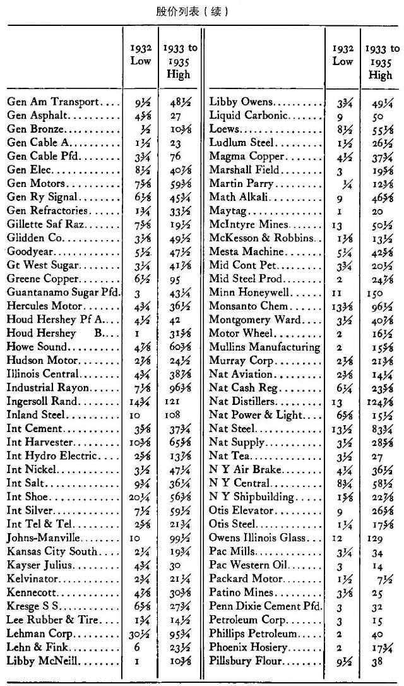
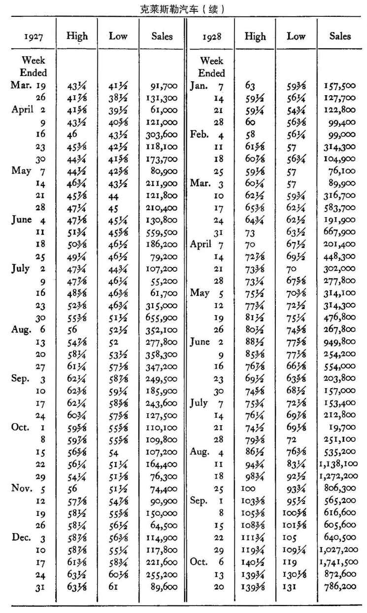
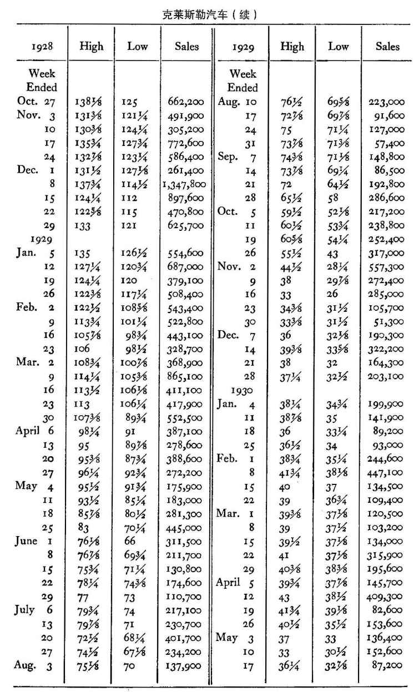
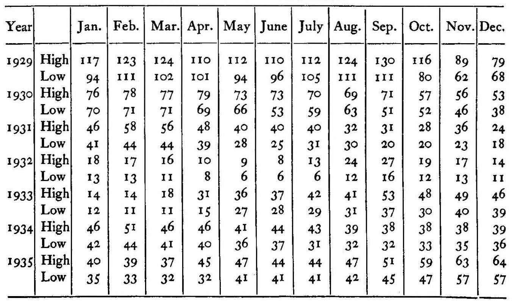
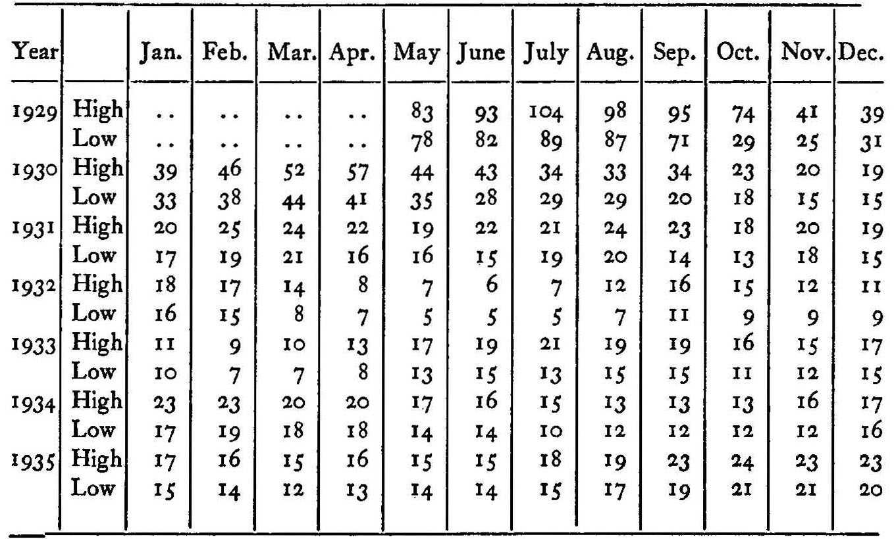
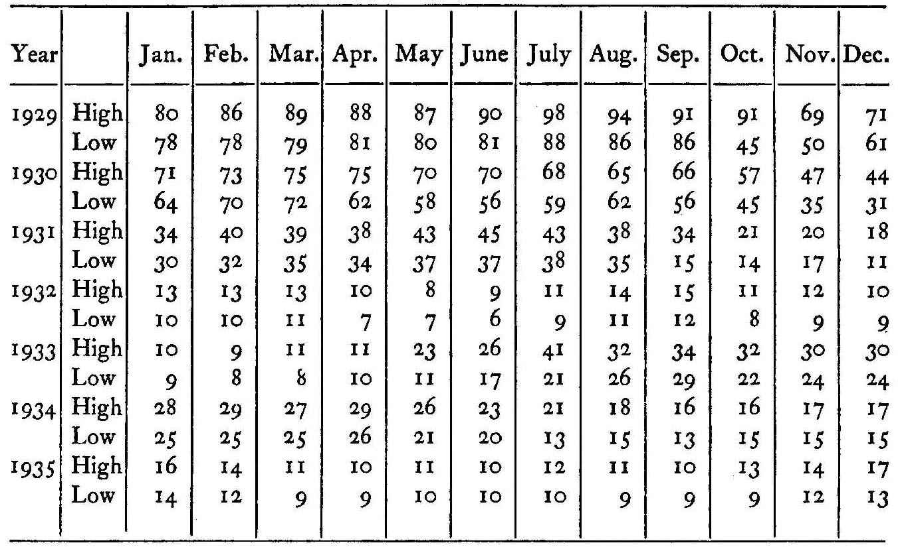
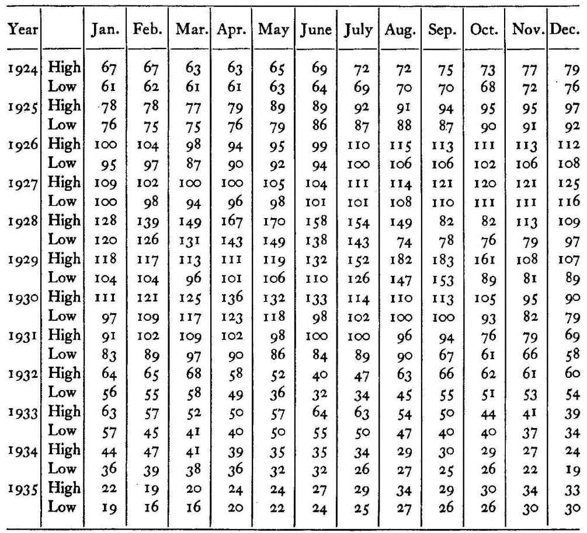
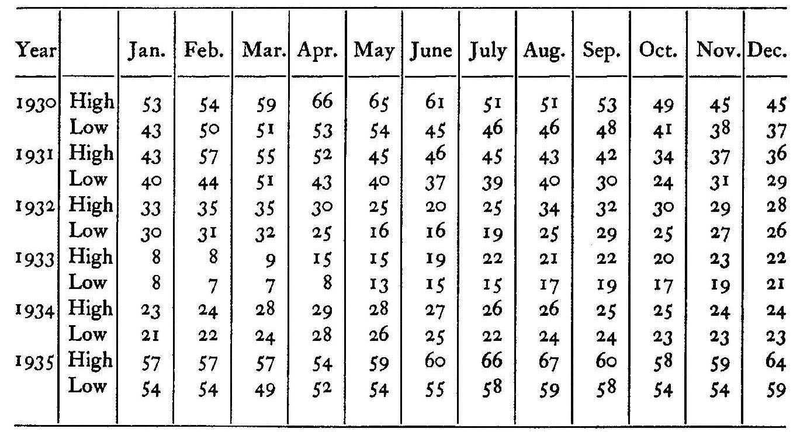
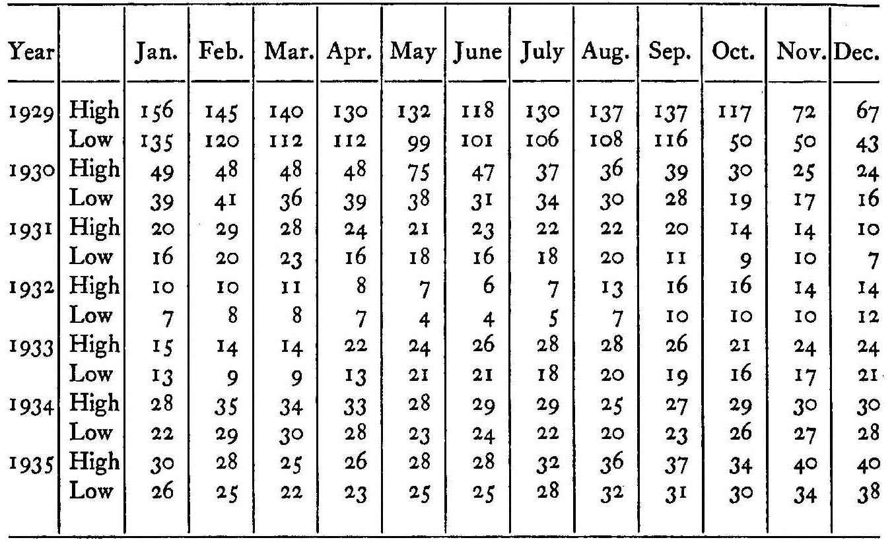
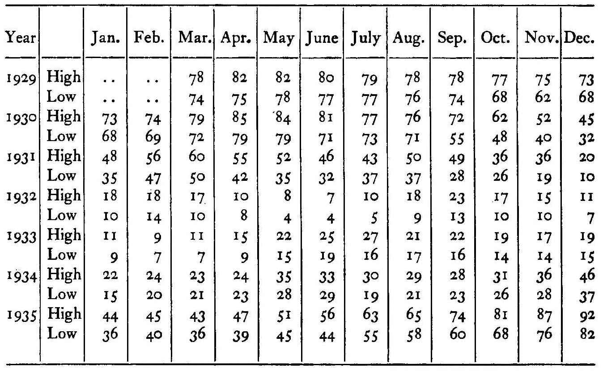

模型1
三图分工模型
月线定方向、周线定波段、日线定时机用月、周、日三级图表分别承担方向、波段与时机三类决策，层级分明、互不越权。
不同尺度记录不同量级的供求博弈。月线过滤日内噪音，只保留大资金建仓痕迹；周线呈现波段节奏与止损位；日线提供入场时机。用日线判方向会把回调误读为反转；用月线找买点则永远错过窗口。
原书锚点：月线定方向、周线定波段、日线定时机（第5章·研判趋势的最佳工具）
五项资质 · 止损单｜先有纪律，再谈效率
月线 · 周线 · 日线｜尺度与结论必须匹配
突破三点 · 跌破三点｜突破须穿过缓冲带
量能四法则 · 牛熊时长｜量能验证价格
用月、周、日三级图表分别承担方向、波段与时机三类决策，层级分明、互不越权。
不同尺度记录不同量级的供求博弈。月线过滤日内噪音，只保留大资金建仓痕迹；周线呈现波段节奏与止损位；日线提供入场时机。用日线判方向会把回调误读为反转；用月线找买点则永远错过窗口。
突破或跌破必须以超过前高前低三个点为确认阈值；确认后回抽跌破前高下方三点，则突破失效。
关键价位聚集大量止损单与挂单，价格常短暂假突破以触发这些订单。三点缓冲带把「触及」与「站稳」区分开：只有穿过且回抽不破，才说明买方真正接管该价位。该阈值同时给出挂单位置，风险被限定在六点内。
在单底、双底、三重底形成时买入，在单顶、双顶、三重顶形成时卖出，止损统一设在形态外侧不超过三点。
价格在同一水平反复获得支撑，说明该价位存在稳定买盘；反复受阻则说明存在稳定卖压。第二、三次测试更可靠，因为每次测试都在消耗对方弹药。第四次到达同一水平时，江恩的经验是趋势通常选择突破而非折返。
以顶部放量、底部缩量、反弹缩量验证价格结论；以个股相对大盘见顶见底的时点差判断强弱。
成交量记录双方投入的兵力：顶部放量说明卖方大量出货，底部缩量说明卖方已无筹码；缩量反弹说明买方不愿追高。时点差暴露主力意图：提前见顶说明已派发完毕，提前见底说明正在吸筹。
以七条法则覆盖资金规模、止损、买入点、卖空点、金字塔加仓、多空转换与量能验证。
设计逻辑是「先定风险，再定方向，最后定节奏」。第一、二条定资金与止损，第三、四条把买卖点绑定在形态与三点突破，第五条按价格区间调整加仓间隔，第六条处理反转切换，第七条用量能验证。七条互相咬合，缺一失效。
为 10 只标的各绘三张高低点图；回测过去两年所有突破信号，统计有效与假突破比例。
以 100 股实盘，入场即挂 1~3 点止损，每日记录三日浮盈状态。
执行一次完整金字塔加仓；对三只标的做量能核对并记录命中率。









